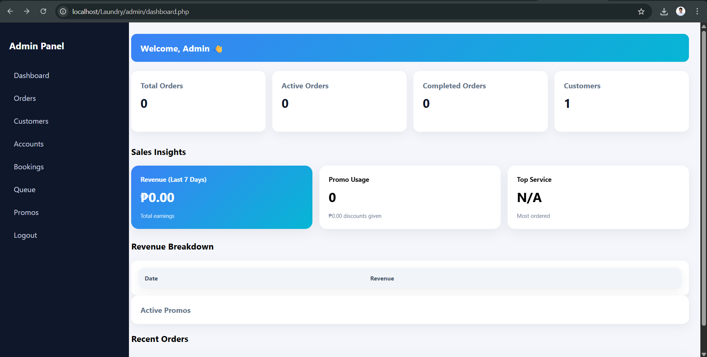
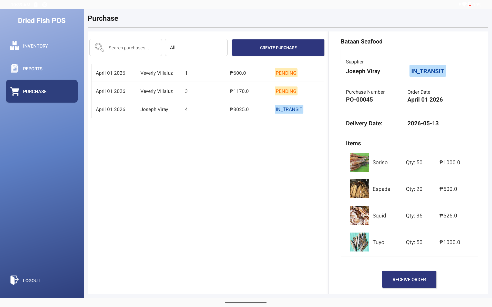
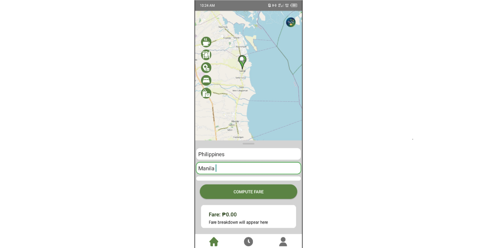
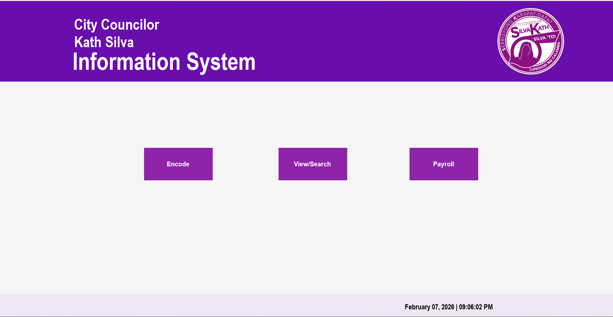
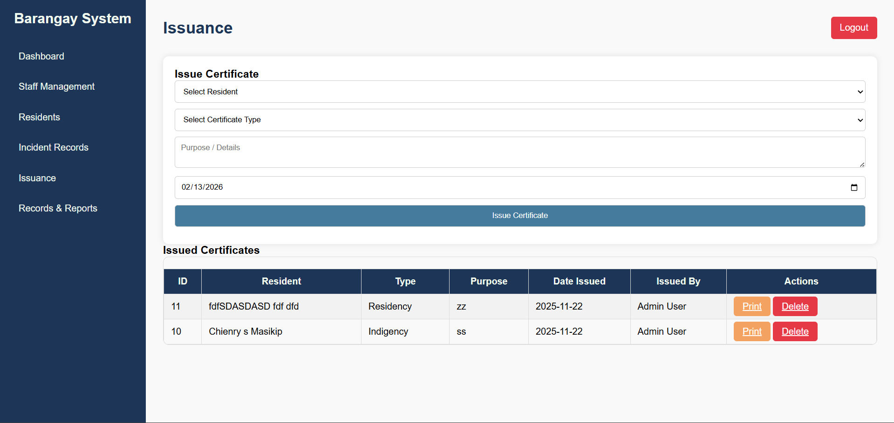
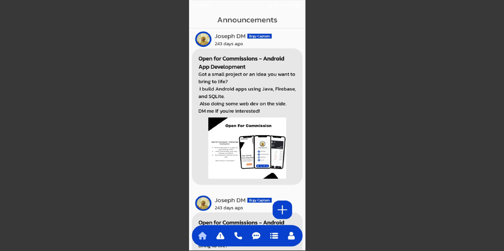
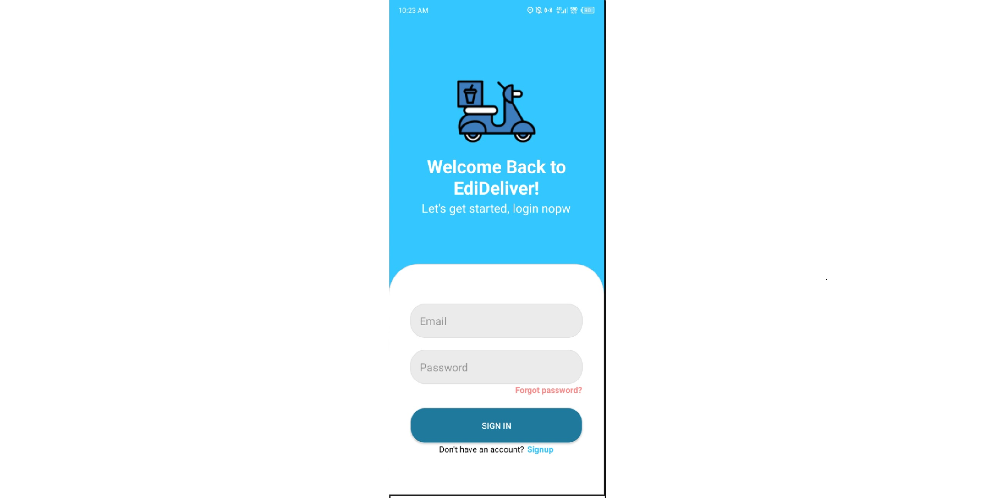

Laundry Management System is a complete application designed to handle and streamline laundry business operations. It includes features such as customer and order management, queueing system, and a real-time dashboard for monitoring activities. The system supports two roles—admin and staff—ensuring proper access control and workflow management. Built as a full system, it demonstrates efficient process automation and user-friendly design for managing daily laundry operations.
PHP, XAMPP, Visual Studio
Dried Fish POS System is a Tablet View complete point-of-sale application designed to manage sales and inventory for a dried fish business. It handles transactions, tracks stock levels, and records daily sales efficiently. The system includes a simple interface for fast checkout and basic reporting features to monitor performance. Built as a practical solution, it demonstrates real-world POS functionality, inventory management, and streamlined business operations.
Java, Firebase, Android Studio
PayFair is an Android application designed to calculate real-world distances using live map integration and provide accurate route-based measurements. It also features a nearby discovery system that fetches local establishments such as coffee shops, malls, and other points of interest. Built as a practical mobile solution, it demonstrates the use of geolocation services and mapping technologies to deliver a simple, user-friendly experience for everyday navigation and location-based decisions.
C#, Winforms, Visual Studio
A real-world government desktop system I developed to manage records, payroll, and administrative tasks efficiently. Built with C# and WinForms, it demonstrates practical, user-friendly solutions for real-world use.
C#, Winforms, Visual Studio
A real-world government web application I developed to manage residents, track incident reports, and handle certificate issuance efficiently. Built with PHP, it showcases practical solutions for local government operations.
Javascript, PHP, XAMPP, Visual Studio Code
A capstone mobile application I developed and commissioned to help barangays manage communications and services. Features include group messaging, announcements, certificate requests, incident reporting, and more, showcasing practical mobile solutions for local governance.
Java, Firebase, Android Studio
EdiDelivery is a prototype Android application designed to simulate an ordering system with real-time status tracking. It allows users to place orders and monitor their progress through different stages, providing a clear view of order updates from request to completion. Built as a functional concept, it demonstrates the basics of order management, status handling, and user interaction in a simple, user-friendly mobile interface.
Java, Firebase, Android Studio